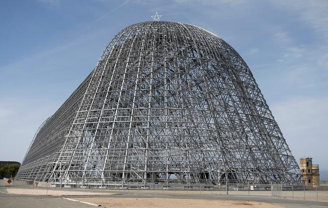

N A S A I N T E R N S H I P :
BIOMIMETIC SWARMS FOR REMOTE SENSING
space systems design • biomimicry • synthetic biology
B A C K G R O U N D
This summer, I received a RISD Textron Grant to work with Dr. Lynn Rothschild at NASA Ames
Research Center as an Astrobiology intern. Her lab exists at a unique intersection of biology
and space innovation--both in the context of examining origin of life on and potentially off-earth,
as well as utilizing biology as technology for use in aerospace. I worked within a sub-team within
her lab, which was centered upon exploring paper microfluidics for use in space. There were a lot
of talented scientists within her lab interested in building in situ biosensors, as well as others
investigating origin of life and biomarkers for life off-earth.
I was asked to dream big -- to imagine what kind of tools might advance this pursuit -- and to envision
what a system of biosensing off-earth might look like.
Prior to the summer, I had taken a Design for Space Systems class with Professor Rick Fleeter at Brown;
from this course, I had a sense of how the priorities for space were different from earth.
In space, payload volume, mass, and risk are all factors that have to be considered heavily--
each mission to space involves a large investment in time and resources; thus, any payload that
is incorporated into the mission must optimize these factors.
✧
Considering the priorities for space, as well as the system of sensing that I was developing platforms for, I constructed this initial problem statement:
My research this summer involved first examining the existing solutions to remote sensing, consulting with experts in the fields of microfluidics, space systems design, as well as planetary science. It also involved researching relevant advances in remote sensing and biotechnology:


✧
Throughout my research process, the specific design constraints of this project became more apparent as my
knowledge of the field became more extensive. I expanded upon this initial question to address specific design requirements:
✧
I also explored the difference between terrestrial/extraterrestrial applications:
✧
With these ideas in mind, I looked to nature for design inspiration, by examining biological
strategies to dispersion, as well as various approaches to small-scale flight.
I ended up designing two seed pod-inspired platforms for a novel system of swarm-based remote sensing, one for earth-based applications,
and the other for off-earth environments.
At the end of the summer, Dr. Rothschild and I submitted the project to the NASA Ames Innovation Fair. Using Adobe After Effects
and Premiere Pro, I animated a proposal video, which describes the project design and research in more detail:
V I D E O P R O P O S A L
✧
N E X T S T E P S
I was fortunate enough to receive 15k in funding from the Innovation Fair to continue the project. Currently, I am the process of continuing my research, and moving towards prototyping and testing these designs. Check back for more updates!